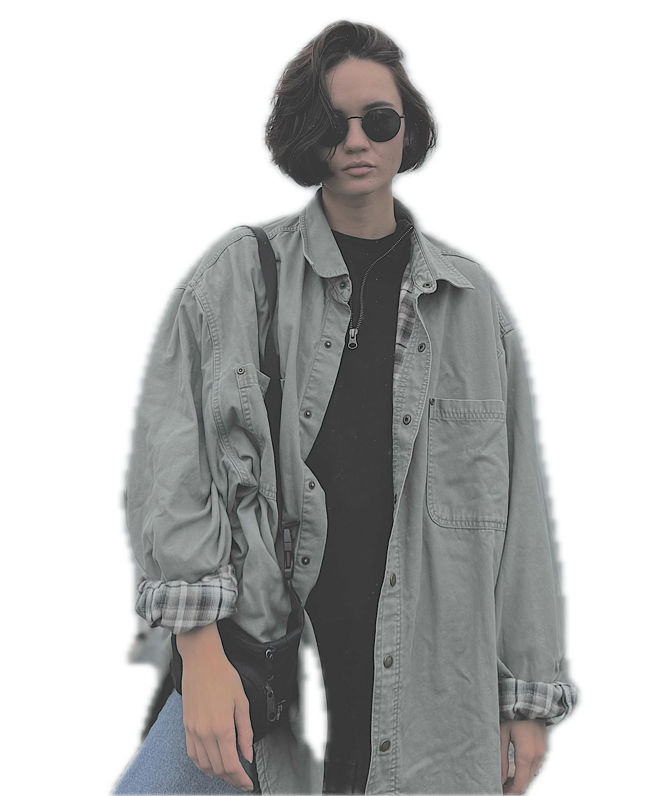

About Me
Hello, I’m Polina! Originally from the lively and rainy city of Seattle, I’m a QA Engineer by day and a web development enthusiast by night. My journey in tech has been an exciting mix of learning, exploring, and pushing the boundaries of quality in software. I’m constantly driven by the excitement of finding that perfect balance between functionality and user experience.

Here's a little more about what makes me, me:
Growing My Tech Skills
Web development has become my newest adventure. I enjoy the problem-solving, creativity, and endless possibilities it offers, and I’m excited to see where it takes me.Creative Outlets
Outside of tech, I have a few hobbies that keep me inspired and grounded:
- Yoga: Practicing yoga gives me mental clarity and physical well-being, which fuel my daily energy and focus.
- Painting: Art allows me to express myself and find inspiration through colors, textures, and patterns.
- Baking & Cooking: My love for experimenting in the kitchen brings out my inner chef. From homemade breads to flavorful dishes, I find joy in creating meals that bring people together.
- Exploring Nature: Seattle’s beautiful surroundings inspire me to go on hikes, enjoy fresh air, and connect with nature.
Thank you for taking the time to learn about me! I’m excited to continue my journey in tech and am always open to connecting with others who share a passion for innovation, creativity, and quality.